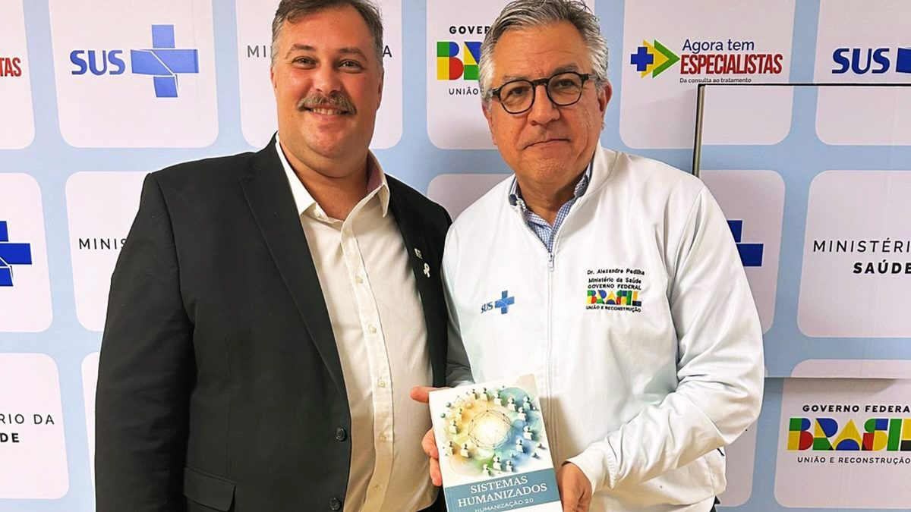
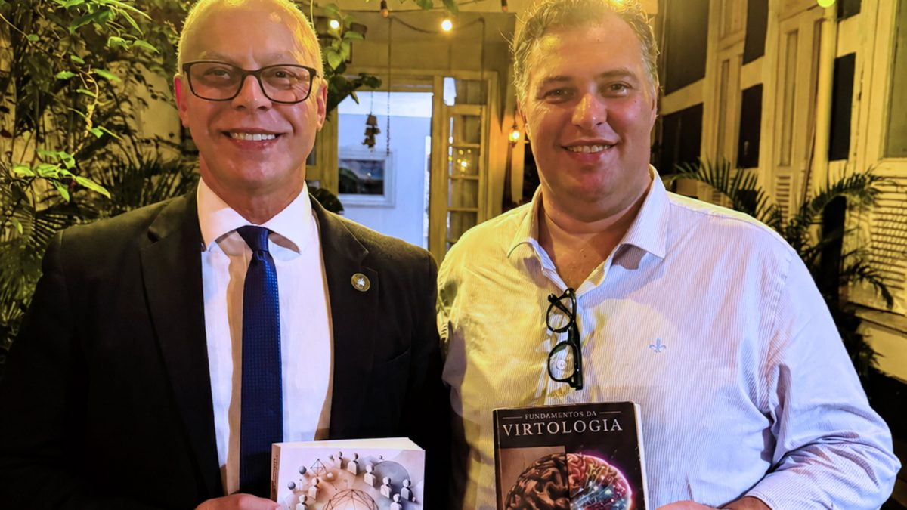
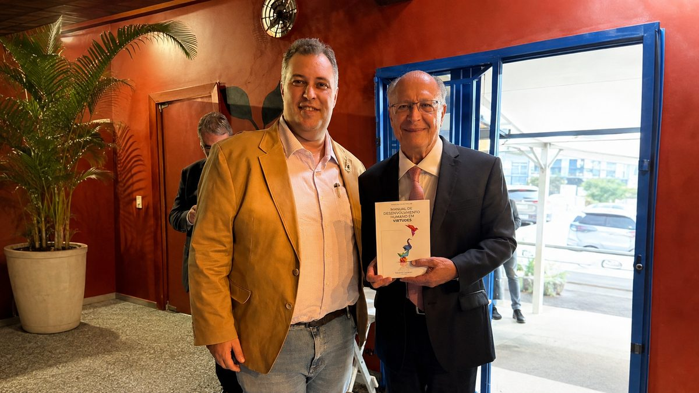
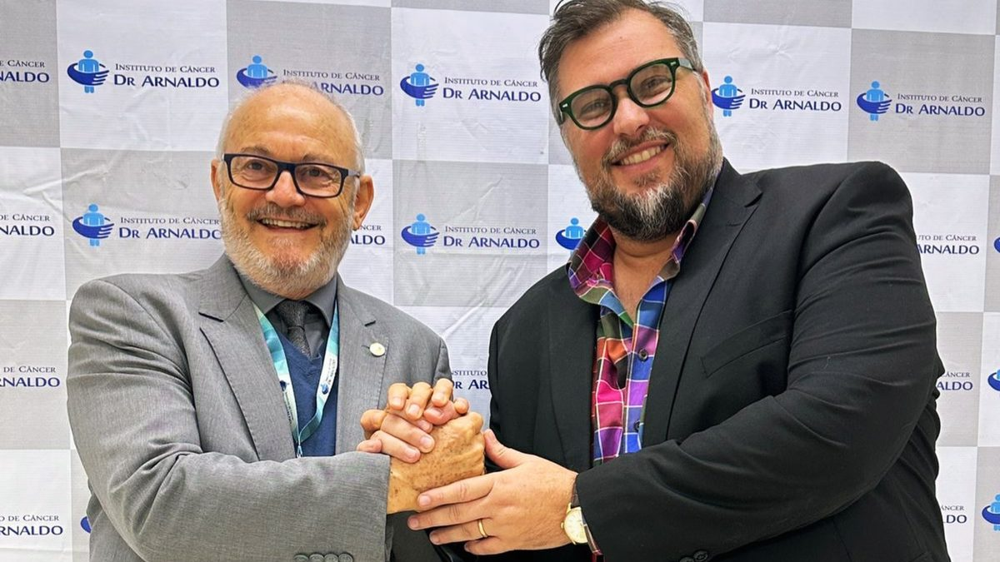

Pós-Graduação em Sistemas Humanizados
O futuro do trabalho já tem nome: organizações centradas no ser humano.
As empresas das próximas décadas serão desenhadas a partir do funcionamento humano. É essa a direção que a Organização Internacional do Trabalho definiu para o futuro do trabalho.
A Pós-Graduação em Sistemas Humanizados é para os profissionais que querem estar à frente dessa transformação mundial do trabalho.


O futuro do mundo corporativo é centrado no ser humano.
As maiores normas internacionais já afirmam.
2019 · Organização Internacional do Trabalho
Uma abordagem centrada no ser humano para o futuro do trabalho
Ao completar 100 anos, a OIT definiu a orientação para o futuro do trabalho: uma abordagem centrada no ser humano, que coloca as pessoas, suas necessidades e seus direitos no centro das políticas econômicas e sociais. A declaração foi adotada pelos 187 países-membros e endossada pela Assembleia Geral da ONU.
As normas internacionais
ISO 27500A ISO defende que as organizações sejam centradas no ser humano e estabelece os sete princípios dessa organização. Entre eles, tratar a saúde, a segurança e o bem-estar como prioridades do negócio, e valorizar as pessoas criando um trabalho com significado.
ISO 30414A ISO define como as empresas devem medir e relatar seu capital humano a investidores e à sociedade.
ISO 27501A ISO traz orientações para que os gestores transformem a organização centrada no ser humano em estratégia, procedimentos e processos.
ISO 45003A ISO orienta as empresas a gerir os riscos psicossociais e a proteger a saúde mental como parte da gestão de saúde e segurança no trabalho.
A Organização Mundial da Saúde
Diretrizes sobre saúde mental no trabalhoA OMS recomenda que a saúde mental no trabalho seja tratada com intervenções na própria organização, e não apenas no indivíduo.
Os investidores
SEC, Estados UnidosA comissão que regula o mercado de ações americano passa a exigir que as empresas de capital aberto informem como gerem seu capital humano.
A lei
Lei 14.831, BrasilO país cria o Certificado Empresa Promotora da Saúde Mental.
NR-1, BrasilDesde 26 de maio, a gestão dos riscos psicossociais entra na fiscalização das empresas.
Normas, instituições, investidores e leis dizem a mesma coisa: a empresa do futuro é desenhada a partir de quem trabalha nela.
Fontes: OIT, Declaração do Centenário · Endosso da Assembleia Geral da ONU · ISO 27500 · ISO 30414 · ISO 27501 · ISO 45003 · OMS, 2022 · SEC, divulgação de capital humano · Lei 14.831/2024 · NR-1. As instituições citadas são referências sobre a direção do trabalho e não têm relação com esta pós-graduação.
O mundo já entendeu: do jeito que está, o trabalho não se sustenta.
Não é um problema do Brasil. É mundial. E os dados são devastadores:
De cada 100 trabalhadores no mundo, só 20 estão engajados.
E o índice voltou a cair: era 23% em 2022.
Gallup, State of the Global Workplace 2026 (dados de 2025)
Metade dos trabalhadores do mundo está procurando ou de olho em outro emprego.
Gallup, 2026
Cerca de 1 em cada 6 adultos em idade de trabalhar vive com um transtorno mental.
Organização Mundial da Saúde
Só por depressão e ansiedade.
É como se 48 milhões de pessoas ficassem um ano inteiro sem trabalhar.
Organização Mundial da Saúde
É quanto o baixo engajamento custa em produtividade.
Estimativa Gallup, 2026
E não é só a pessoa.
Trabalhar sob alta pressão e com pouco controle sobre o próprio trabalho está associado ao dobro do risco de depressão.
Revisão sistemática com meta-análises
Sem uma mudança radical, o trabalho não se sustenta. Essa mudança já começou.
Fontes: Gallup, State of the Global Workplace 2026 · Gallup, retenção e intenção de saída · OMS, saúde mental no trabalho · Meta-análise sobre riscos psicossociais e doença mental. Os 12 bilhões de dias e os US$ 10 trilhões são estimativas das próprias instituições. A equivalência em 48 milhões de pessoas considera 250 dias úteis por ano.
Toda mudança de época cria uma nova geração de profissionais.
Quando a qualidade virou norma, surgiu o especialista em qualidade. Quando a sustentabilidade entrou na pauta, surgiu o especialista em ESG.
As organizações centradas no ser humano também têm os seus.
Um olhar diferente
Enxergam a organização inteira, e não só as pessoas dentro dela: estrutura, cargos, processos, políticas e cultura.
Uma linguagem que a diretoria entende
Falam de saúde mental, risco psicossocial e desempenho na mesma conversa, porque entendem que são o mesmo assunto.
Repertório internacional
Conhecem as referências que desenham essa mudança: OIT, ISO 27500, ISO 45003, OMS e NR-1.
Um título
São especialistas, com certificado de pós-graduação emitido pela FACEO - Faculdade Centro Oeste, instituição credenciada pelo MEC.
A Pós-Graduação em Sistemas Humanizados forma os profissionais que estão à frente dessa transformação.
Para quem está na gestão, ou ao lado dela.
Na gestão
Gestores, líderes e diretores de empresas, de instituições de saúde e do serviço público, e profissionais que se preparam para assumir essas posições.
Ao lado da gestão
Psicólogos organizacionais, profissionais de DHO, de cultura e clima, RH Business Partners e consultores, que orientam as decisões sobre como uma organização funciona.
O que reúne essas pessoas é o lugar que ocupam: perto das decisões que definem como uma empresa trata quem trabalha nela.
Pré-requisito: graduação completa, em qualquer área.
O que um especialista em Sistemas Humanizados domina
Da cadeira em que a pessoa senta ao conselho que decide.
A formação cobre a organização inteira. Cada ponto abaixo é estudado com seu fundamento, seu instrumento e seu modelo pronto para adaptar.
Bloco 1O funcionamento humano no trabalho
- As 51 necessidades humanas e seus 5 grupos
- As 33 virtudes como competência moral: a Terceira Competência
- As 5 camadas da personalidade e os 12 campos temperamentais
- As 7 competências centrais e as 47 subcompetências
- Trabalho e funcionamento cerebral
- Orgulho e egoísmo nas organizações
- As três ondas do trabalho
Bloco 2A organização como sistema
- Os 5 filtros da humanização
- As 4 etapas de instalação: estrutura, processos, gestão e asseguração
- Personalidade organizacional e o Manual de Personalidade da empresa
- As 5 faixas de evolução organizacional
- Governança corporativa humanizada
- O RH como mediador sistêmico
- Liderança humanizada e a escala dos sete níveis
Bloco 3Cargos, carreira e desempenho
- Desenho do cargo humanizado: protocolo de seis passos e ficha de perfil do cargo
- Manual de Cargos: os quatro componentes e a reunião mensal de fluxo
- Recrutamento e seleção, com o recrutamento interno prioritário
- Orientação profissional e gestão de carreira
- Treinamento e desenvolvimento humanizado
- Benefícios e incentivos, incluindo a remuneração por virtudes
- Avaliação de desempenho com a Terceira Competência
- Desligamento humanizado
Bloco 4Saúde mental e NR-1
- Síndromes do trabalho: burnout, brownout e boreout
- Anamnese e o Departamento de Saúde Mental
- O diagnóstico humanizado: pesquisa de clima, entrevista individual e relatório final
- O instrumento de 28 perguntas em 8 blocos para a pesquisa de riscos psicossociais
- O comitê de avaliação
- Gerenciamento humanizado de conflitos
Bloco 5Políticas, manuais e compliance
Manual de Humanização de Políticas Internas, com 25 políticas-modelo:
- 1Flexibilidade de Horário
- 2Desenvolvimento Pessoal e Profissional
- 3Inclusão e Diversidade
- 4Saúde e Bem-Estar
- 5Feedback Contínuo
- 6Reconhecimento e Recompensa
- 7Apoio à Parentalidade
- 8Igualdade Salarial
- 9Humanização do Atendimento ao Cliente
- 10Gestão Horizontal
- 11Ambiência e Design Humanizado
- 12Transparência
- 13Suporte em Crises Pessoais
- 14Sustentabilidade e Responsabilidade Social
- 15Transparência na Comunicação
- 16Conciliação Trabalho-Vida Pessoal
- 17Mentoria
- 18Descompressão e Qualidade de Vida
- 19Gestão de Estresse
- 20Transparência nos Processos de Promoção e Carreira
- 21Gerenciamento Humanizado de Conflitos
- 22Relacionamentos Afetivos no Trabalho
- 23Recrutamento Interno Prioritário
- 24Desligamento Humanizado
- 25Política Constitutiva da CIPIH
E também:
- Manual de Valores, Princípios e Crenças
- Política de Ética Humanizada
- Compliance Humanizado e Código de Conduta
- Manual de Feedbacks Humanizado
- Manual de Atendimento ao Público
- Cartilha de Inclusão
- Gestão do conhecimento humanizada
Bloco 6Implantação e asseguração
- O processo de implantação: triangulação das três visões, da primeira reunião à devolutiva
- A CIPIH, Comissão Interna de Prevenção e Incentivo de Humanização
- Ouvidoria, pesquisa de clima e avaliação como sistema de asseguração
- A certificação SISH: 8 eixos e 4 níveis
Bloco 7Estrutura e regime de trabalho
- Condições físicas: ergonomia, equipamentos, climatização, acústica, iluminação, refeitório e pausas, higiene, acessibilidade e segurança
- Home office, presencial e híbrido, com a Política de Regime de Trabalho
Bloco 8Contextos de aplicação
- Saúde
- Serviço público
- A quarta revolução industrial

Material didático da formação
Sistemas Humanizados · Humanização 2.0
Catalogado na Biblioteca do Senado Federal.
O criador da pós-graduação
Dr. Eduardo Casarotto
Pesquisador, professor, consultor empresarial, formador de terapeutas há 25 anos e coordenador de cursos de pós-graduação. Fundamentador dos Sistemas Humanizados e da Escola Clínico-Filosófica Virtologia.
Autor de mais de 20 livros, com publicações científicas no Brazilian Journal of Health Review. Seu trabalho de humanização foi aplicado em grandes organizações, hospitais oncológicos, escolas, órgãos públicos e sistemas prisionais no Brasil e na Colômbia.
Doutor Honoris Causa pela Academia Mundial de Letras (duas vezes) e Comendador pela Assembleia Legislativa de São Paulo.


Como funciona a pós-graduação
| Curso | Pós-Graduação em Sistemas Humanizados: Saúde Mental, Cultura Organizacional e Gestão de Riscos Psicossociais (NR-1) |
|---|---|
| Nível | Pós-graduação lato sensu (especialização) |
| Carga horária | 360 horas |
| Formato | 100% online, com aulas gravadas |
| Duração | De 4 a 12 meses, conforme o seu ritmo |
| Tira-dúvidas | Por escrito, abaixo da aula de cada módulo |
| Avaliação | Provas de múltipla escolha em plataforma controlada e TCC aplicado |
| Certificação | Certificado emitido pela FACEO - Faculdade Centro Oeste, instituição credenciada pelo MEC, com validade nacional |
| Material didático | Aulas gravadas e o livro Sistemas Humanizados · Humanização 2.0, do Dr. Eduardo Casarotto |
| Pré-requisito | Graduação completa em qualquer área |
A Pós-Graduação em Sistemas Humanizados é para quem quer ser um desses profissionais.
Quero me matricularAinda tem alguma dúvida? Fale com nossa equipe pelo WhatsApp.
O que costumam perguntar
Humanização não é aquela coisa de empatia e bem-estar?
Não. Aqui, humanização é a disciplina que estuda a relação entre o funcionamento humano e o ambiente de trabalho. O que se estuda são as estruturas que fazem uma organização respeitar ou violar esse funcionamento: cargos, políticas, processos, governança, avaliação e saúde mental.
Esta pós é só sobre saúde mental ou NR-1?
Não. Saúde mental e riscos psicossociais fazem parte dessa formação, mas aqui é coberta a organização inteira: estrutura, cargos, políticas, processos, cultura, liderança e governança.
Qual a diferença para uma pós de liderança ou de gestão de pessoas?
Uma pós de liderança ou de gestão de pessoas trabalha uma parte da organização. Esta trata da organização de ponta a ponta: da estrutura física e dos cargos às políticas, à governança, à saúde mental e ao sistema que mede e sustenta tudo isso.
Preciso ser da área de RH ou de saúde?
Não. O pré-requisito é graduação completa em qualquer área. A formação é para quem está na gestão ou ao lado dela, venha da área que vier.
Qual a validade do certificado?
O curso é uma pós-graduação lato sensu (especialização), com certificado emitido pela FACEO - Faculdade Centro Oeste, instituição credenciada pelo MEC, com validade nacional. O nome oficial do curso é Sistemas Humanizados: Saúde Mental, Cultura Organizacional e Gestão de Riscos Psicossociais (NR-1).
Em quanto tempo consigo concluir?
De 4 a 12 meses. Como as aulas são gravadas, o ritmo depende da sua disponibilidade.
Como funciona a avaliação?
Por provas objetivas de múltipla escolha ao longo dos módulos e um Trabalho de Conclusão de Curso (TCC) aplicado ao final.
Tem TCC?
Sim. É um trabalho individual, escrito e aplicado, de 12 a 20 páginas, com diagnóstico em Sistemas Humanizados e proposta de intervenção. Não há defesa oral. São fornecidos manual, template e rubrica de avaliação.
Tem aula ao vivo?
As aulas do conteúdo são gravadas e você assiste no seu ritmo. Além delas, há um Encontro Fechado mensal com o Dr. Eduardo Casarotto, exclusivo para alunos, voltado a aprofundamento e aplicação. A presença nos encontros ao vivo não é obrigatória. O tira-dúvidas do dia a dia fica por escrito, abaixo de cada aula na plataforma.
O curso prepara para implantar o sistema em uma organização?
Sim. A formação é voltada a tornar o profissional apto a implantar sistemas humanizados em instituições públicas ou privadas.
Ainda tem alguma dúvida? Fale com nossa equipe pelo WhatsApp.